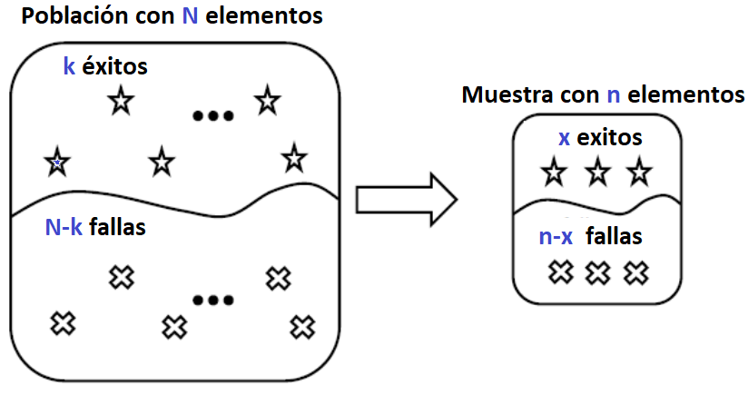

Los experimentos que tienen este tipo de distribución tienen las siguientes características:
Al realizar un experimento con este tipo de distribución, se esperan dos tipos de resultados, exito y un fracaso
Las probabilidades asociadas a cada uno de los resultados no son constantes.
Cada ensayo o repetición del experimento es dependiente de los demás.
El número de repeticiones del experimento (n) es constante.

Pruebas electrónicas
Control de calidad
Fabricación de piezas
Juegos de azar
Si X es el número de éxitos (E) en una muestra completamente aleatoria de tamaño n extraída de la población compuesta de K éxitos y (N-K) fallas, entonces la pdf es:
\[ f(x) \;=\; P(X=x)\;= \; \frac{{k\choose x}\,{N-k\choose n-x}}{{N\choose n}}, \qquad \text{donde}\quad x=0,1,2, \ldots, n \quad \text{y}\quad n\leq N \]
Si X sigue una distribución hipergeométrica con parámetros n, K y N, se denota:
\[X\sim h(n,K,N)\]
Valor esperado: \[E(x)=np \qquad p=\frac{k}{N}\]
Varianza \[V(x)=npq\frac{N-n}{N-1} \qquad p=\frac{k}{N}\]
\[ F(x) \;=\; P(X\leq x)\;= \sum_{x=0}^x\; \frac{{k\choose x}\,{N-k\choose n-x}}{{N\choose n}}, \qquad \text{donde}\quad x=0,1,2, \ldots, n \quad \text{y}\quad n\leq N \]
Sea x la variable aleatoria que representa las plantas tratadas
k semillas tratadas=5
N-k semillas no tratadas 8
El tamaño de la población es:
semillas tratadas + semillas no tratadas= 5+8 =13
Recordemos la pdf:
\[ f(x) \;=\; P(X=x)\;= \; \frac{{k\choose x}\,{N-k\choose n-x}}{{N\choose n}}, \qquad \text{donde}\quad x=0,1,2, \ldots, n \quad \text{y}\quad n\leq N \]
¿cuál es la probabilidad de que
\[ P(X=4)\;= \; \frac{{5\choose 4}\,{8\choose 0}}{{13 \choose 4}}=0.7\%\] El resultado en R sería
dhyper(x=4, m=5, n=8, k=4)
#> [1] 0.006993007\[ P(X\leq 3)\;= p(x=0)+p(x=1)+p(x=2)+p(x=3)=\]
\[ \frac{{5\choose 0}\,{8\choose 4}}{{13 \choose 4}}+ \frac{{5\choose 1}\,{8\choose 3}}{{13 \choose 4}}+ \frac{{5\choose 2}\,{8\choose 2}}{{13 \choose 4}}+ \frac{{5\choose 3}\,{8\choose 1}}{{13 \choose 4}}\] Para resumir, la probabilidad pedida es: \[\sum_{x=0}^3\; \frac{{5\choose x}\,{8\choose 4-x}}{{13\choose 4}}=99.3\%\] En R sería:
phyper(q=3, m=5, n=8, k=4)
#> [1] 0.993007\[p(X=x)= \frac{{5\choose x}\,{8\choose 4-x}}{{13\choose 4}}\qquad \text{para} \quad x=0,1,2,3,4\]
Sea x la variable aleatoria que representa el número de clientes que han comprado en los ultimos tres meses
Identificar los parámetros:
N=1000 k=700 n=50
\[P(x>45)=P(x=46)+p(x=47)+p(x=48)+p(x=49)+p(x=50)\] En la calculadora: \[P(x>45)= \frac{{700\choose 46}\,{300\choose 4}}{{1000\choose 50}}+ \frac{{700\choose 47}\,{300\choose 3}}{{1000\choose 50}}+ \frac{{700\choose 48}\,{300\choose 2}}{{1000\choose 50}}+ \frac{{700\choose 49}\,{300\choose 1}}{{1000\choose 50}}+ \frac{{700\choose 50}\,{300\choose 0}}{{1000\choose 50}}\]
\[P(x>45)=\sum_{x=46}^{50}\;\frac{{700\choose x}\,{300\choose 50-x}}{{1000\choose 50}}!!!!!\] En R lo realizaremos por el complemento
\[P(x>45)=1-p(x\leq 45)\] \[=1-\sum_{x=0}^{45}\;\frac{{700\choose x}\,{300\choose 50-x}}{{1000\choose 50}}\]
1-phyper(q=45, m=700, n=300, k=50)
#> [1] 0.0001275857Una distribución hipergeométrica se aproxima a una binomial con p=K/N, cuando N se aproxima a infinito, en general es buena aproximación cuando \(n<\frac{N}{10}\)
Para resolver el ejercicio anterior el planteamiento es:
\[n<\frac{N}{10}, \qquad 50<\frac{1000}{10}, \qquad 50<100\] Luego la probabilidad corresponde a
\[p=\frac{K}{N}=\frac{700}{1000}=0.7\] Recordemos la forma acumulada de la distribución binomial
\[p(x\leq x)=F(x)=\sum_{x=0}^x\displaystyle{n \choose x}p^x q^{n-x}\] Entonces p=0.7, n=50 \[P(x>45)=P(x\geq 46)=\sum_{x=46}^{50}{50 \choose x}0.7^x 0.3^{50-x}=0.017\%\]
Comparando los resultados
En R la respuesta fue 0.000127 mientras que la respuesta por aproximación fue 0.000172 la diferencia absoluta entre resultados es de 0.000045 y el error relativo es
(abs(0.000127-0.000172)/0.000127)*100
#> [1] 35.43307Calcule lo siguiente:
P(X=5)
P(X<4)
La probabilidad de que X exceda su valor medio por más de una desviación estándar
¿Cuál es la función masa de probabilidad del número de especímenes de granito seleccionados para su análisis?
¿Cuál es la probabilidad de que todos los especímenes de uno de los dos tipos de roca sean seleccionados para su análisis?
¿Cuál es la probabilidad de que el número de especímenes de granito seleccionados para analizarlos esté dentro de una desviación estándar de su valor medio?
¿Qué distribución tiene X (nombre y valores de todos los parámetros)?
Calcule P(X = 2)
P(X ≤ 2)
P(X ≥ 2)
Calcule el valor medio y la desviación estándar de X.